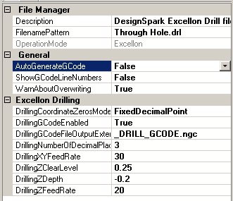

Line Grinder
Excellon File to Drill GCode Software
Excellon File Managers

The Line Grinder Excellon File Manager
What Do Excellon File Managers Do
Excellon File Managers produce the GCode which drill the pad holes and vias in the PCB. This automates the task of manually drilling the holes with a drill press and hence reduces the breakage of drill bits (they are very thin). Excellon GCode is created from the Excellon drill file contents by associating a File Manager with an OperationMode of type Excellon with the file. The association is performed by setting the FileNamePattern field of the File Manager to all or part of the Excellon files name.
Since there can be many different hole sizes on a PCB, the generated Drilling GCode contains commands to stop the bit and prompt the operator for a tool change whenever a different size of drill bit is required.
The configuration items for Excellon File Managers are:
General Category
- OperationMode
- This value determines the type of GCode the File Manager will create from the GCode file it processes. This value is set when the File Manager is created and cannot be changed.
- FilenamePattern
- A part of a Excellon file name. When the Excellon file is opened, the list of File Managers will be searched and the first File Manager found which has a FilenamePattern value contained within the name of the Excellon file will be used to process that file. The standard wild cards of * and % should not be used.
- Description
- A user-defined configuration item that can be used as brief documentation to describe the purpose of the File Manager.
File Manager Category
- AutoGenerateGCode
- If enabled, the GCode file can be automatically generated when the file is opened. If this value is False then the GCode must be generated after the file is opened by pressing the Convert to GCode button found on the main form.
- ShowGCodeLineNumbers
- If enabled, old style line numbers will be placed in the GCode file. This option is offered for completeness since line numbers in the GCode file almost never necessary or wanted.
- WarnAboutOverwriting
- Normally the Line Grinder will issue an warning message if the GCode file you are about to save already exists. This warning can be disabled by setting this option to False.
Excellon Drilling Category
- DrillingGCodeEnabled
- If this value is set to True then the GCode which drills the pad and via holes will be generated when the Generate GCode button on the main form is pressed.
- DrillingCoordinateZerosMode
- Excellon files do not, according to most standards, place decimal points in the coordinates they encode. The proper interpretation and scaling of the coordinates is expected to be done by the software that processes the file. This value indicates how to process the coordinate data. If the mode is FixedDecimalPoint then the software assumes that there are DrillingNumberOfDecimalPlaces of decimal places in each coordinate. The mode of OmitLeadingZeros assumes that any leading zeros have been removed, and these will be added back on before the DrillingNumberOfDecimalPlaces of value is used to scale the number. Note that some Excellon files store values in a OmitTrailingZeros mode. This type of encoding is not supported.
- DrillingNumberOfDecimalPlaces
- This value should indicate the number of decimal places each coordinate should use. Most Excellon files do not use decimal points in the coordinates and expect the processing software to scale the numbers.
- DrillingGCodeFileOutputExtension
- When the generated Excellon GCode file is saved, the existing filename extension will be removed and this value substituted in its place.
- DrillingZDepth
- This is the depth, in Application Units, to which the toolhead will be driven through the PCB material in order to drill the PCB holes. This value should be negative (zero is traditionally the surface of the PCB) and should be deep enough to place the end of the bit through the bottom of the PCB. Obviously you are not going to want to be drilling into the bed of your mill, so the PCB is usually mounted on a "throw-away" piece of wood.
- DrillingZClearLevel
- This is the height above the PCB at which the toolhead moves quickly in order to get into position. It should be positive because it is above the surface of the PCB and high enough to clear all hold downs and other clamping material.
- DrillingZFeedRate
- This is the speed (in Application Units per minute) at which the toolhead will drive the drill bit into the PCB.
- DrillingXYFeedRate
- This is the speed (in Application Units per minute) at which the toolhead moves from place to place between the drill holes. If it is too slow then the drilling operations will take longer than necessary.